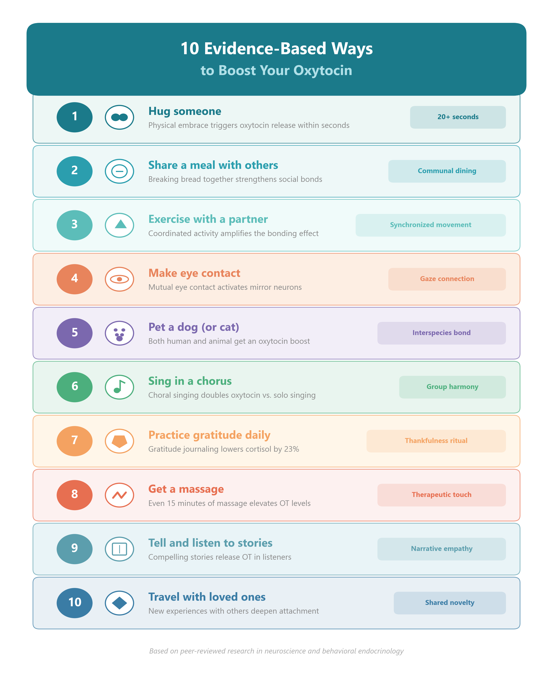

The World Health Organization identifies three pillars of health: not only physical health, but mental health and social health as well. Among physical ailments, conditions like hypertension, diabetes, and cancer continue to surge, alongside rapidly increasing inflammatory bowel disease. Meanwhile, alarm bells are ringing for mental and social health too. Depression and bipolar disorder have become commonplace, and conditions such as schizophrenia, anxiety disorders, sleep disorders, and obsessive-compulsive disorder are rising sharply. As the number of single-person households grows and rates of marriage, birth, and population growth decline, social isolation and the severing of human connection have led to alarming rates of elderly people living and dying alone. For more than a decade, South Korea has held the grim distinction of having the highest suicide rate among OECD nations. Television is filled with programs depicting marital conflicts and generational divides, and beyond the usual tensions between neighbors, regions, and genders, the social distancing imposed by COVID-19 has compounded these threats to the nation's health on every front.
"Are we truly happy right now?"
Let me share something that happened long ago. One day, I scolded the senior student representative in my lab. What I had hoped was that the student would rally the team, encouraging everyone to buckle down and do their best. Instead, the student I had reprimanded took out their frustration on fellow students, blaming and snapping at each other. The lab atmosphere predictably nosedived. I told myself I had been rational and controlled, but the truth is that I was overwhelmed by my own workload and had vented my irritation. The student just happened to be in the line of fire. My pointless outburst became one of the worst precedents in my memory. Those graduate students who bore the brunt of my frustration may well have gone home and turned their anger on parents, siblings, or partners, tangling their own relationships in turn.
This is how life works. We do not live alone — we live in relationship with others. Our emotions are contagious. When you are around a happy person, their happiness rubs off on you. When you are around someone depressed, you start feeling down too. Being around someone with high oxytocin raises your own oxytocin levels, and living with someone whose cortisol is chronically elevated sends your own cortisol on a roller coaster.
Imagine a person with high oxytocin joining a workplace. This person listens attentively to supervisors, trusts colleagues, and is kind to everyone. They share food, make eye contact during conversations, and consistently show consideration for others. When a gem like this joins a team, oxytocin levels across the entire department would skyrocket. Even when difficulties arise or unexpected obstacles appear, work life would feel joyful and fulfilling. And the ripple effect would extend to other departments, to those employees' families, and even to partner companies.
This actually happens around us all the time. Nicholas Christakis and James Fowler, authors of Connected, tracked over 12,067 people across more than 50,000 social network connections over many years. They found that obesity spreads not just to friends but to friends of friends, and even to friends of friends of friends. If all of you reading this book practice the oxytocin lifestyle in your homes, you could exert an infinite positive influence — not only on your spouse, parents, friends, and colleagues, not only on strangers you meet today, but on the groups and communities you belong to, and ultimately on society itself. And this does not grow arithmetically; it grows exponentially.
Recently, I met Professor Seo Eun-guk, author of The Origin of Happiness, and we had a long conversation about the link between extraversion and happiness, weaving in what I know about oxytocin. He shrugged and admitted he had not been aware of all the connections between oxytocin and social relationships, physical health, and mental health described in this book — but added that he was not at all surprised that oxytocin is involved in all of them. Oxytocin is the hormone of compassion, empathy, and heart-to-heart connection. Whether you explain this from a social-evolutionary perspective — that kind individuals learned through evolution to survive by securing help from others — or from a creationist perspective — that we were designed to love and care for one another, and therefore experience true happiness only when we do — does not change the core fact: oxytocin is at the heart of it all. Which of these two perspectives is correct lies beyond the scope of this book. But if more people had high oxytocin, and if more people shared that power with those around them, how much more beautiful and happy would our nation become?
Carrying this rosy vision, I — as a health researcher — have long been thinking about how to improve individual health and community well-being through lifestyle changes. Along the way, I discovered the hormone oxytocin. It was serendipitous that my doctoral research in Canada focused on the endocrine system, and my postdoctoral work at Harvard centered on the feeding center-hypothalamus-pituitary axis — both of which gave me a strong foundation for understanding oxytocin. As I read paper after paper, I could not help but fall for this remarkable hormone. What first amazed me was that oxytocin is a hormone of sociality and connection. What amazed me a second time was the link between oxytocin and modern disease.
"Let us meet, share, and love — earnestly."
Oxytocin is produced when we meet people, look into each other's eyes, talk, touch, and love. When oxytocin is deficient, we do not just become unhappy — we become ill. The sad truth is that people in our society are gradually losing the ability to meet, converse, and love. The incidence of chronic diseases and mental illness is climbing steeply. Through the COVID-19 pandemic, isolation and separation were actually encouraged, and as hyper-aging and automation advance simultaneously, ordering a bowl of soup at a restaurant now means using a kiosk, and having a single dish of noodles delivered to your home is entirely contactless. It is heartbreaking. The enormous popularity of the Korean variety show I Live Alone reflects how many people relate to a solitary existence. The coining of the word "untact" (contactless) signals that we stand at the tail end of a dystopian legacy in which meeting other human beings has become awkward.
All life and all happiness begin with human touch. No matter how far society advances into social networks, the metaverse, and cutting-edge IT, one truth remains unchanged: every meeting and relationship rooted in our physical bodies gave rise to the vast structure we call civilization. In the film Ready Player One, Dr. Halliday's parting words to the protagonist Parzival ring with meaning: "Go back to reality. That's the only place where you can get a decent meal." In an era that has moved beyond the nuclear family into the age of the "nuclear individual," we must rewrite the narrative of connection — the oxytocin story — to build healthier individuals and happier communities. Close this book right now and call up a friend you have not seen in ages for a drink. Share a plate of Korean pancakes with a neighbor you have been distant from. Take your spouse — the one you have been sleeping in separate rooms from — on a proper date downtown. That is what I want to see.
As I wrap up this book, I realize that during the six months I devoted to writing, my own oxytocin levels were probably higher than ever. Looking back, I find that I was unconsciously listening more attentively to my elders, looking more deeply into the eyes of the people I spoke with, treating my family more kindly, hugging them more often, and showing greater care and consideration to my colleagues and students. As I finish the manuscript, I think of the saying: knowledge is power, and you see as much as you know. I sincerely hope that this book broadens your horizons and helps make our wonderful country a happier place. And I pray that this book — even if only as much as a speck of dust, as small as a single mustard seed — contributes to building a healthier, happier nation. Thank you.